| Version 6.0.3 |
Die aktuelle Integration von QF-Test und HP ALM - Quality Center baut auf dem von Quality Center gelieferten VAPI-XP-TEST Typ auf.
|
| 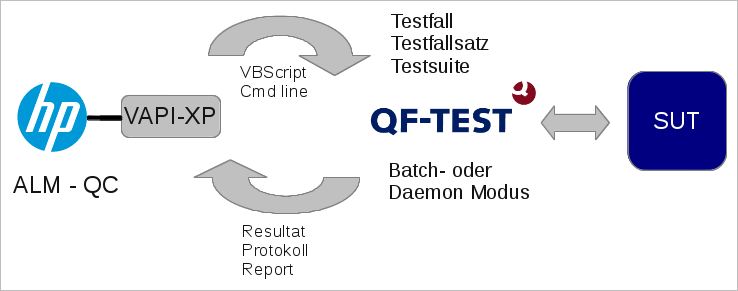 | ||
|
| Abbildung 25.1: Integration mit ALM - Quality Center | ||
Dieser Testtyp ist für den Aufruf von automatisierten
Testskripten gedacht.
Eine Vorlage für ein VAPI-XP-TEST Skript, welches QF-Test an Quality Center
anbindet, finden Sie in der Datei qcVapiXPTemplate.txt im QF-Test
Installationsverzeichnis, siehe qftest-6.0.3/ext/qualitycenter. Diese
Vorlage kann für alle QF-Test Tests, welche in Quality Center aufgerufen werden, benutzt
werden. Eine detaillierte Schritt-für-Schritt Anleitung dazu finden Sie in Abschnitt 25.1.2.
Die QF-Test Vorlage für das VAPI-XP-TEST Skript benutzt ein externes VBScript Skript
qcTemplate.vbs, welches die Ausführung der Tests übernimmt. Dieses Skript ist
ebenfalls Bestandteil des Lieferumfangs von QF-Test (siehe
qftest-6.0.3/ext/qualitycenter). Je nach Bedarf sollten Sie dieses
Skript anpassen und in ein projektspezifisches Verzeichnis kopieren.
Der VAPI-XP-TEST in Quality Center startet QF-Test im Batchmodus lokal auf jedem einzelnen Testsystem. Dies bedeutet also, dass das externe Skript auf jedem Testsystem verfügbar bzw. erreichbar sein muss und entsprechend müssen auch die Testsuitedateien auf jedem Testsystem verfügbar sein, weshalb wir empfehlen, diese Dateien auf ein gemeinsames Netzlaufwerk zu legen bzw. in Ihr Versionsmanagementsystem aufnehmen.
Nach Ausführung des Tests wird das QF-Test Protokoll als Anhang zur Testinstanz hochgeladen und auch der Status des Tests entsprechend gesetzt.
Sie können das externe Skript auch dahingehend ändern, dass anstatt des Batchmodus ein Daemonaufruf (siehe Kapitel 51) stattfindet. In diesem Fall baut QF-Test die Verbindung zum Testsystem auf und nicht mehr Quality Center. Im Falle des normalen Batchaufrufes baut Quality Center die Netzwerkverbindung auf und ruft dann lokal QF-Test auf. Wenn Sie den Daemonaufruf benutzen wollen, dann muss sich das externe Skript auf dem Rechner, auf dem Quality Center installiert ist befinden, jedoch müssen die Testsuitedateien weiterhin auf jedem einzelnen Testsystem erreichbar sein.
Falls Sie eine andere unterstützte Skriptsprache als VBScript, z.B. JScript, in Ihrem Projekt einsetzen sollten, können Sie die QF-Test Vorlagen natürlich in diese Skriptsprache portieren.
In der folgenden Abbildung sehen Sie das VAPI-XP-TEST Skript in Quality Center:
|
| 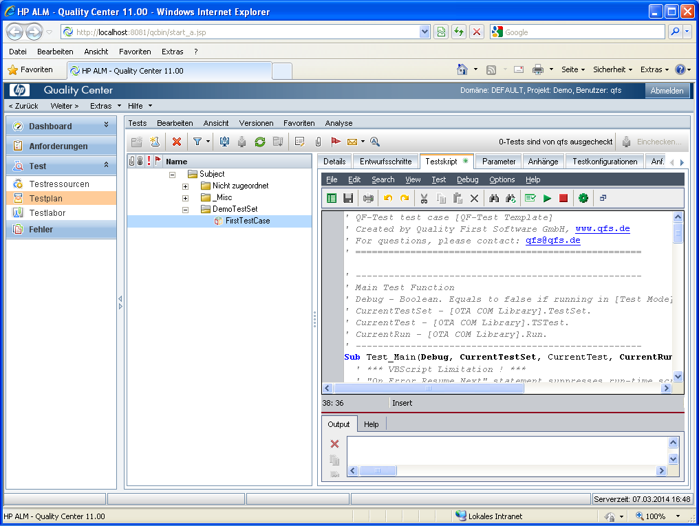 | ||
|
| Abbildung 25.2: QF-Test VAPI-XP-TEST Testfall in HP ALM - Quality Center | ||
Allgemeine Schritte die auf dem Testsystem auszuführen sind:
qftest-6.0.3/ext/qualitycenter/qcTemplate.vbs in ein
projektspezifisches Verzeichnis und ändern Sie dessen Namen. Wir empfehlen Ihnen, auf jedem
Testsystem denselben Pfad oder alternativ ein Netzlaufwerk zu verwenden.
Schritte in ALM - Quality Center, um einen Beispieltest anzulegen:
Im Bereich "Testplan" können Sie als ersten Schritt einen neuen Testfallsatz z.B. 'DemoTestSet' anlegen.
|
| 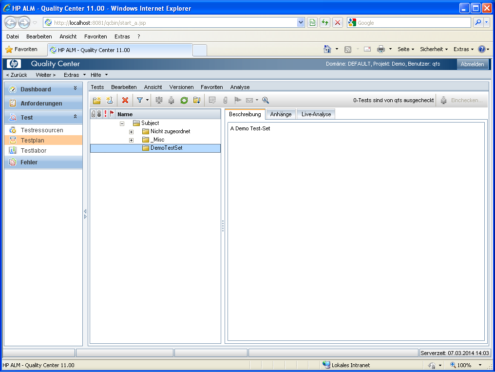 | ||
|
| Abbildung 25.3: Im Testplan einen neuen Testfallsatz anlegen | ||
In diesem Testfallsatz erstellen Sie einen neuen Test vom Typ VAPI-XP.
|
| 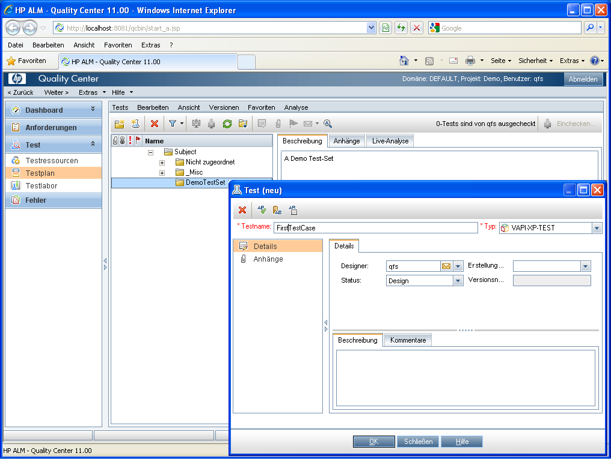 | ||
|
| Abbildung 25.4: Test vom Typ VAPI-XP-TEST anlegen | ||
HinweisIm HP VAPI-XP Wizard Fenster drücken Sie einfach ohne Änderungen auf Finish. (Das bedeutet Sie haben VBScript als Skriptsprache und COM/DCOM Server Test als Testtyp).
|
| 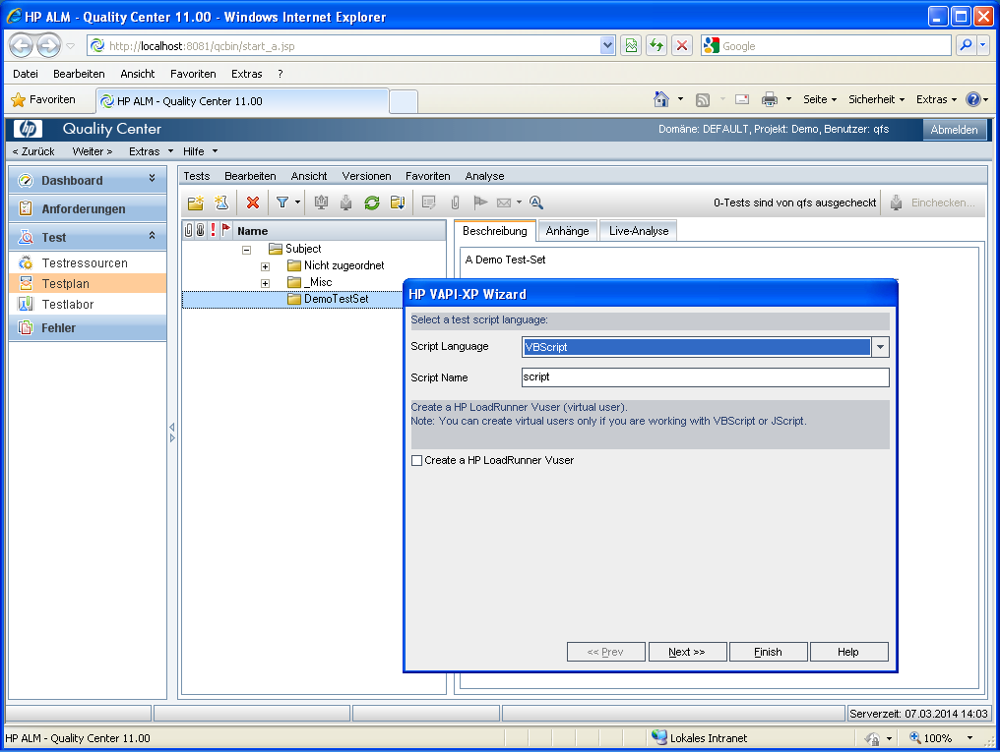 | ||
|
| Abbildung 25.5: HP VAPI-XP Wizard | ||
Der erhaltene Test sieht wie folgt aussieht.
|
| 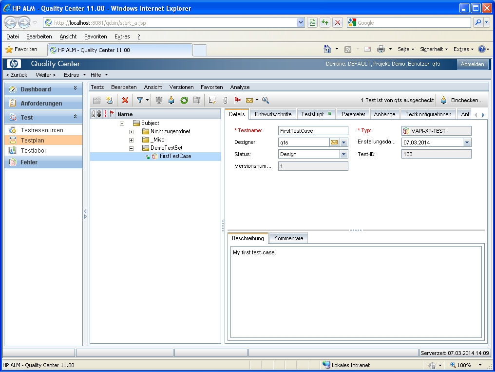 | ||
|
| Abbildung 25.6: VAPI-XP-TEST Details | ||
Wechseln Sie zum Reiter "Testskript" und kopieren Sie den Inhalt der QF-Test Vorlage
qftest-6.0.3/ext/qualitycenter/qcVapiXPTemplate.txt in den Textbereich
des Skripteditors.
|
| 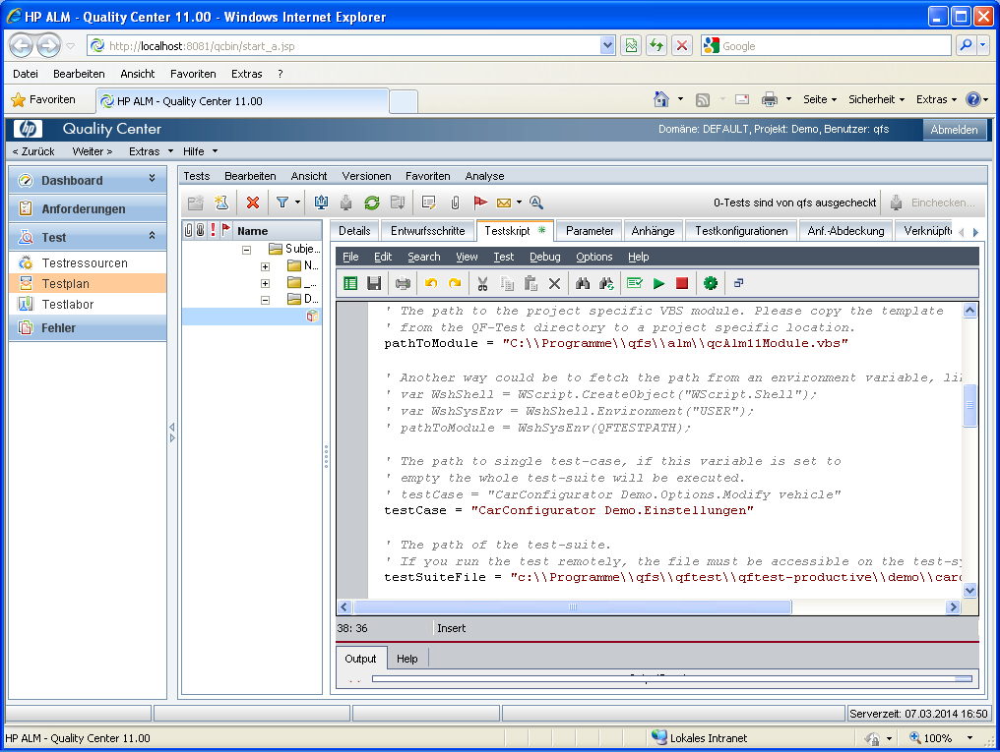 | ||
|
| Abbildung 25.7: Template in Textbereich des Skripts kopieren | ||
pathToModule Variable auf den Pfad,
in welchen Sie das externe Skript qcTemplate.vbs kopiert haben.
testSuiteFile entsprechend
der zur verwendenden Testsuite an.
testCase entsprechend an.
Bitte beachten Sie auch die Kommentare in den QF-Test Vorlagen, in denen Sie Hinweise zu weiteren Einstellungsoptionen finden.
Schritte in ALM - Quality Center zum Ausführen des Beispieltests:
Vermutlich werden Sie auch hier einen Testfallsatz anlegen wollen.
|
| 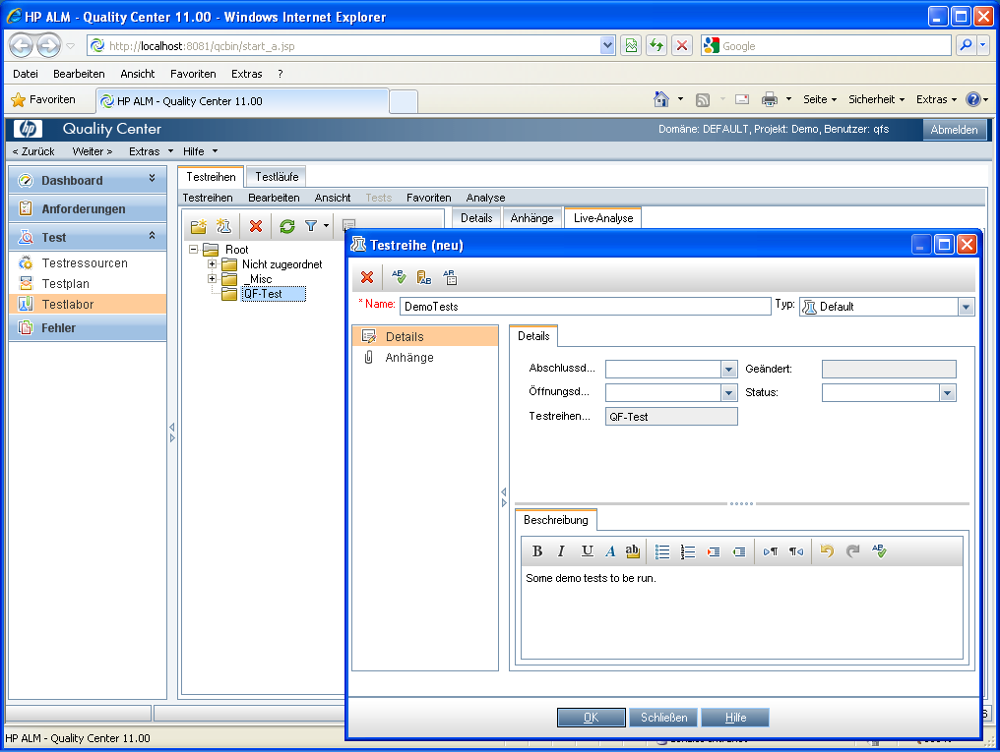 | ||
|
| Abbildung 25.8: Neuer Testfallsatz im Testlabor | ||
Fügen Sie dort den im vorigen Teil erstellten VAPI-XP-TEST durch passendes Auswählen zur Ausführung hinzu.
|
| 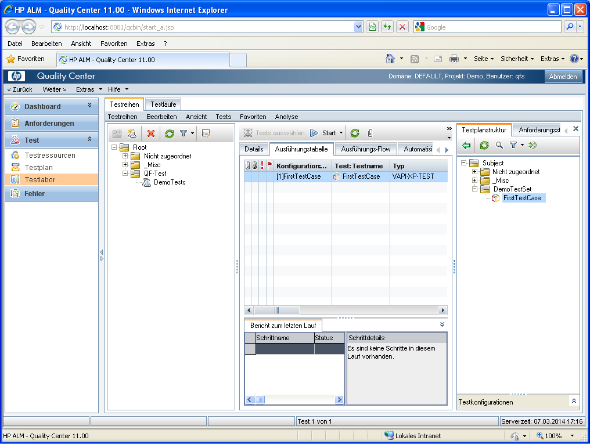 | ||
|
| Abbildung 25.9: Test zu Ausführung hinzufügen | ||
Nun können Sie den Test starten. Achten Sie darauf, dass Sie das Häkchen bei "Alle Tests lokal ausführen" setzen, außer Sie haben bereits ein verteiltes System eingerichtet.
|
| 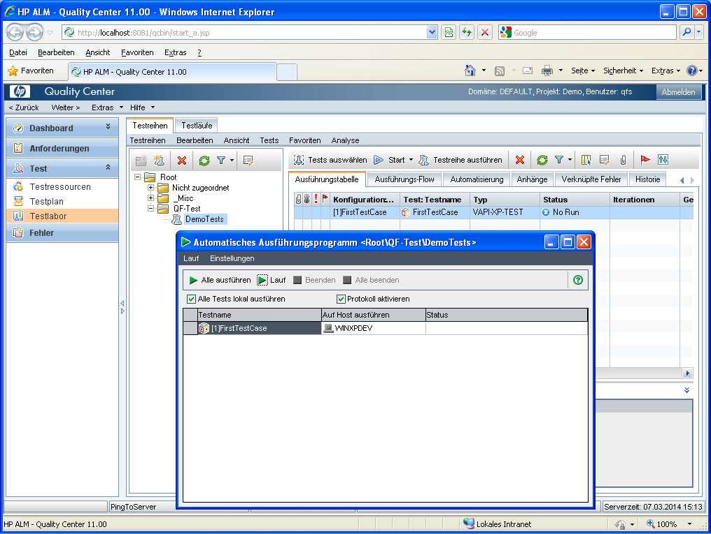 | ||
|
| Abbildung 25.10: Ausführung des Tests | ||
Quality Center sollte nun den Test ausführen - ggf. auf Ihrem Rechner, dann taucht das SUT auf, Aktionen werden durchgeführt und das SUT wird wieder beendet. Nach dem Beenden wird das Resultat für den Testlauf eingetragen: Passed oder Failed.
|
| |||
|
| Abbildung 25.11: Testresultat | ||
Zusätzlich zum Ergebnis wird auch das QF-Test Protokoll in Quality Center hochgeladen und beim Testlauf abgelegt. Um das Protokoll anzusehen, führen Sie einen Doppelklick auf den Test im Ausführungsbreich aus, wechseln Sie dann auf "Läufe" und klicken nochmals doppelt auf die Büroklammer (Anhangssymbol) des entsprechenden Testlaufs.
|
| 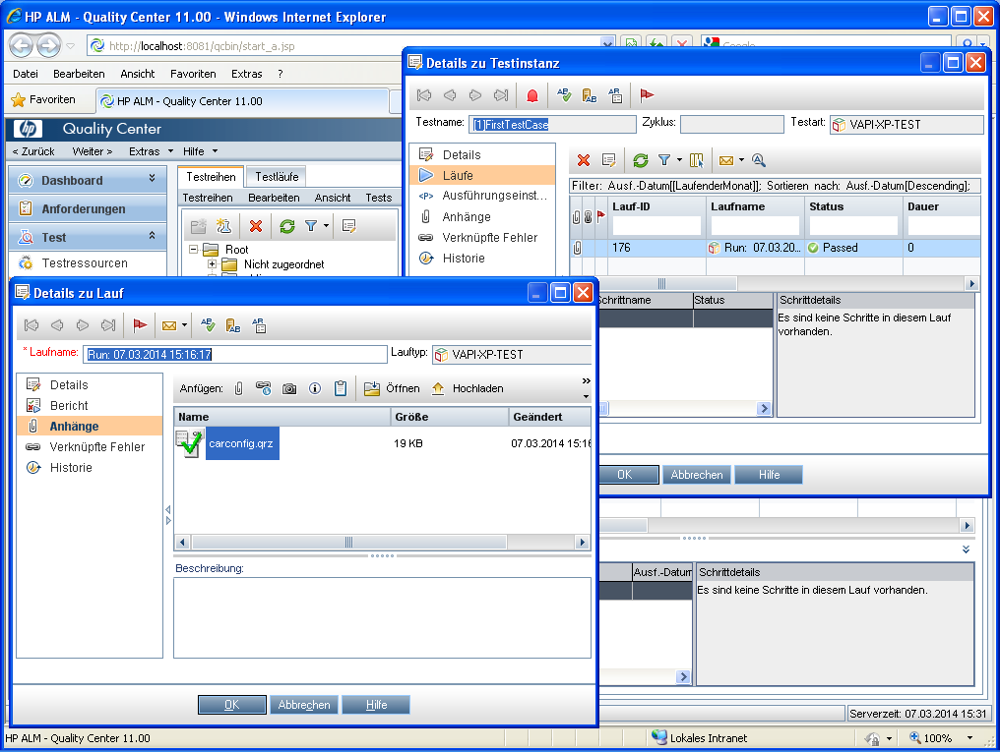 | ||
|
| Abbildung 25.12: Hochgeladenes Protokoll | ||
Als ersten müssen wir vorausschicken, dass wir selbst keine Quality Center Experten sind. Deshalb mag es weitere und bessere Wege zu Fehlersuche geben. Trotzdem wollen wir die Methoden, die wir selbst angewendet haben, hier beschreiben.
Leider ist die Prozessausgabe während der Testausführung nur für wenige Sekunden sichtbar und erlaubt somit keine direkte Analyse. Deshalb muss man eine Alternative suchen.
Der Texteditor des VAPI-XP-TEST Testknotens im Bereich "Testplan" erlaubt das direkte Ausführen des Skripts. Die Ausgabe ist dann permanent im Bereich unter dem Skript sichtbar und enthält hoffentlich etwas hilfreiches.
|
| 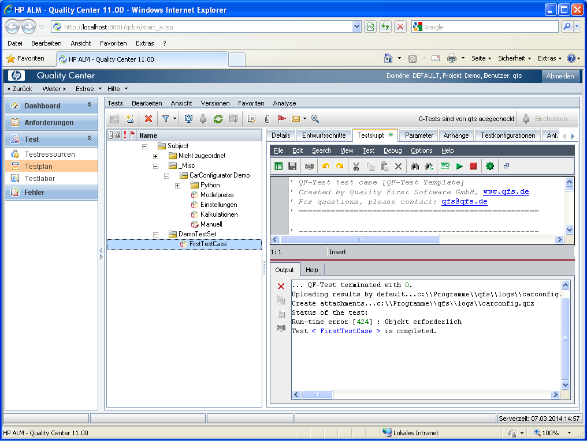 | ||
|
| Abbildung 25.13: Skript Debuglauf | ||
Die direkte Ausführung eines Skripts muss jedoch mit Vorsicht betrachtet werden. Es handelt sich ja nicht um einen echten Testlauf. Deshalb kann auch das Protokoll nicht hochgeladen werden und es wird ein entsprechender Run-time error "Objekt erforderlich" ausgegeben. Davon sich also bitte nicht verwirren lassen!
Für weiteres Debugging kann man zusätzliche Ausdrücke der der Form TDOutput.Print "Some
text" in die Skripte und auch das externe Skript einbauen. Mit diesen kann man sehen,
wie weit die Ausführung des Skripts funktioniert und wo ggf. ein Fehler auftritt.
Der Skripteditor hat auch einen "Syntax check" Button, der hilfreich zur Prüfung nach jeder Änderung eingesetzt werden kann.
| Letzte Änderung: 6.9.2022 Copyright © 1999-2022 Quality First Software GmbH |